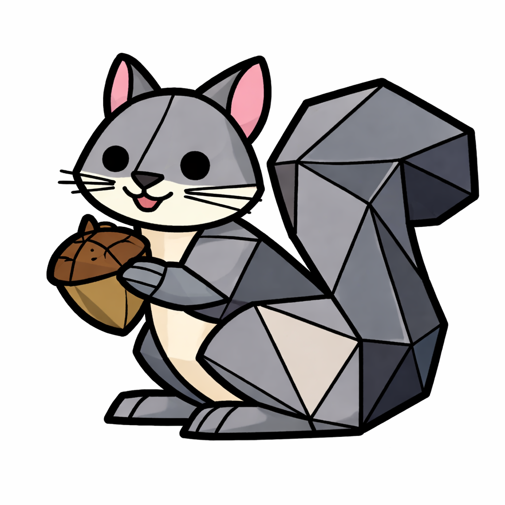
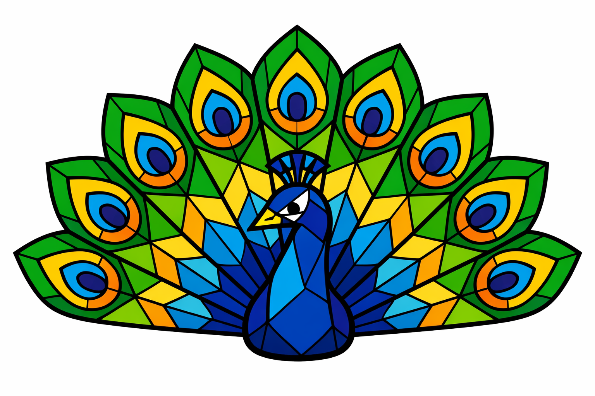
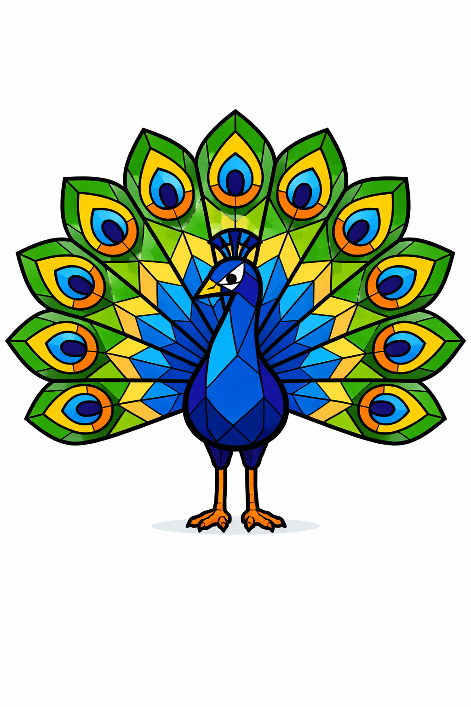
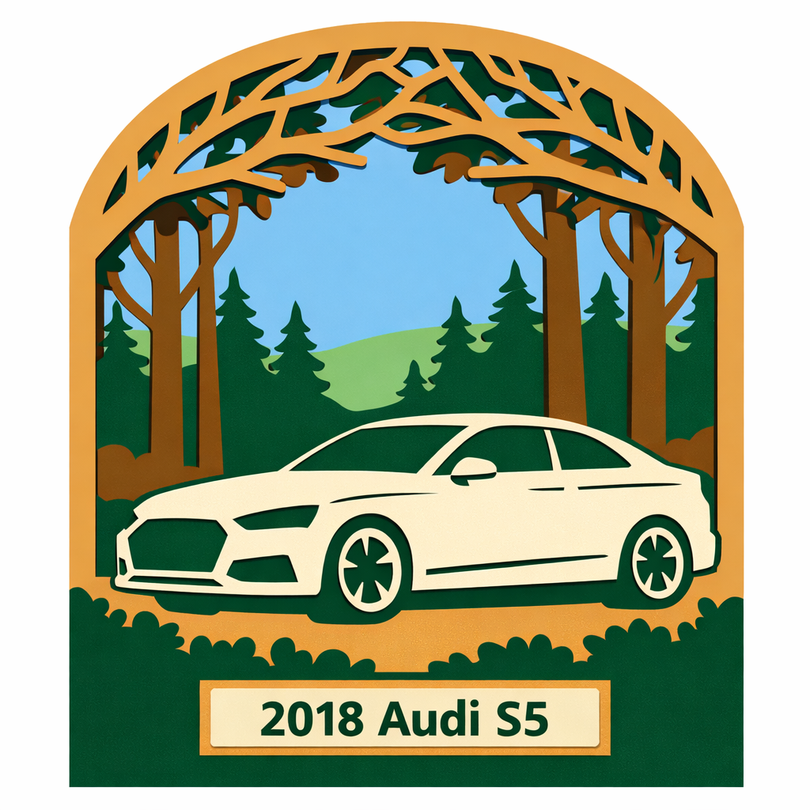
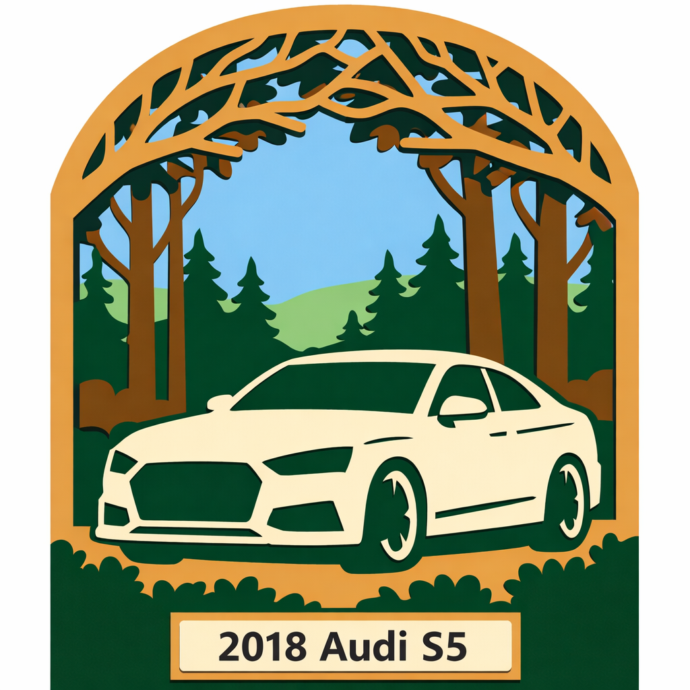
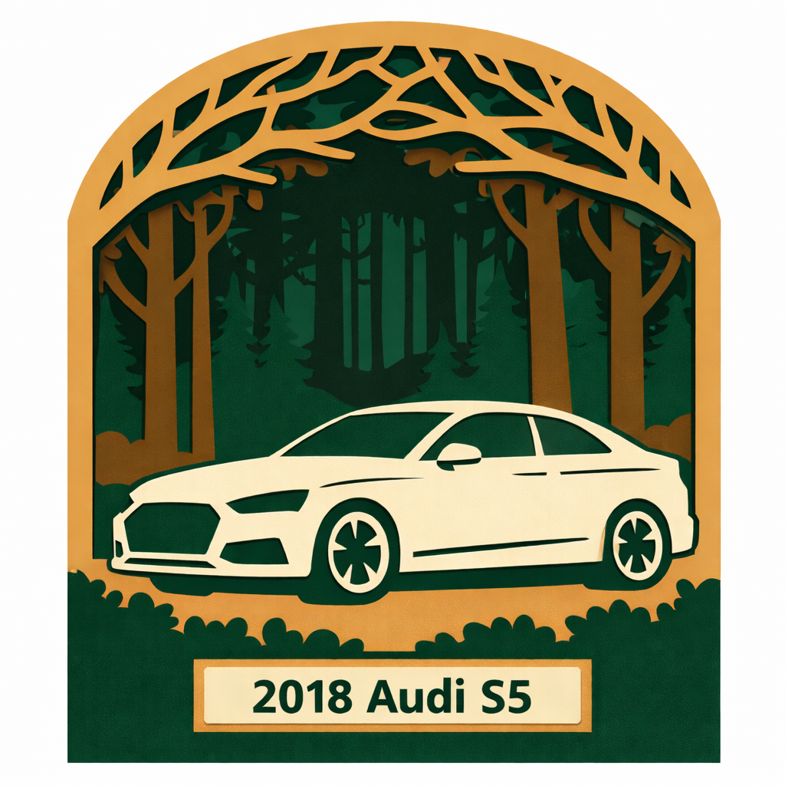

LLM Prompt Tests
Image generation prompts tested for laser-cutting suitability — clean outlines, flat fills, high contrast, minimal gradients.
Generate a low poly stained glass mallard duck illustration.
Use exactly 8 flat solid colors plus pure black.
No gradients, no shading, no lighting effects, no texture.
Each polygon must be a single flat color fill.
Use uniform thickness black outline lines between all shapes.
Vector style, clean SVG look, posterized, high contrast, simple geometric shapes.
White background.
Results
Mallard duck

Clean polygon facets with uniform black outlines. Good contrast and flat fills — suitable for vectorizing. Feet and bill have slight gradient artifacts.
Squirrel with acorn

Strong polygon structure on body and tail. Face reverts to a rounder cartoon style — less angular than the duck. Acorn detail is small but clean.
Generate a low-poly stained glass peacock illustration.
The tail must contain 9 identical repeating feathers arranged in a perfectly symmetrical fan.
Every tail feather must be an exact duplicate of the others.
All feathers must use the identical polygon layout and the identical color arrangement.
Each feather must contain the same three-part eye pattern:
• outer teardrop shape
• middle ring
• center oval
The surrounding polygons must also be identical in every feather.
Important:
The feather located behind the peacock's head must be identical to the others.
The head must overlap the feather, but the feather design must not change, distort, or remove any shapes.
All feathers must appear as copied and rotated duplicates of one master feather.
Use exactly 8 flat solid colors plus pure black outlines.
No gradients.
No shading.
No lighting effects.
No textures.
Each polygon must be one flat solid color.
Use uniform thickness black outlines between every polygon.
Style requirements:
• vector style
• clean SVG appearance
• posterized
• high contrast
• simple geometric polygons
White background.
Results
Sitting (fan display)

Strong symmetry across all 9 feathers. Eye pattern (teardrop / ring / oval) consistent. Background fill polygons vary slightly between feathers — not exact duplicates, but visually uniform. Good flat-fill contrast throughout.
Standing (full body)

Feather symmetry holds well. Body and legs add vectorizable detail. Slight gradient artefacts visible in the tail fill polygons — not pure flat fills. The head-overlap feather is preserved and not distorted.
Design a laser-cut layered shadow box artwork using flat vector shapes.
The composition should follow a paper-cut shadow box style with an arched frame and multiple depth layers similar to a decorative layered wood art piece.
Replace the people in the reference design with a 2018 Audi S5 coupe silhouette (side profile) based on the reference car image.
Remove the coral shapes entirely.
Replace the scripture banner at the top with tree branches forming a forest canopy that stretches across the arch frame.
Add a small bottom nameplate panel that reads:
2018 Audi S5
The artwork must look like separate laser-cut layers stacked in depth.
Use 6 distinct layers:
1. Arch frame
2. Foreground foliage
3. Audi S5 silhouette
4. Midground trees
5. Background forest
6. Back panel
Style requirements:
• Flat vector shapes only
• One solid color per layer
• No gradients
• No shading
• No lighting effects
• No textures
• No thin lines
• Bold cuttable shapes
Shapes must include structural bridges so the cut pieces remain connected.
The design should look like a clean SVG laser-cut template suitable for wood or acrylic layered art.
Color each layer with a different flat color to represent separate materials.
White background.
Render the design as clean vector poster art with thick shapes and simple geometry.
Results
Audi S5 — side profile v2

Cleaner stencil structure than v1. Car sits lower in the frame giving better ground-plane depth. Foreground foliage is bolder and more laser-friendly. Arch canopy branches are thicker. Car body uses fewer thin lines — closer to a cuttable silhouette. Wheel spokes still present but simplified.
Create a screen print color separation graphic designed as vinyl cutter stencil artwork for a layered laser-cut shadow box.
The composition is an arched decorative forest scene.
Replace the people with a simplified silhouette of a 2018 Audi S5 coupe viewed from the front-left three-quarter angle.
Remove the coral shapes completely.
Replace the scripture banner with connected tree branches forming a forest canopy that spans across the arch frame.
Add a small rectangular nameplate centered at the bottom that reads exactly:
2018 Audi S5
The design represents stacked laser-cut layers.
Layer concept:
1 arch frame with canopy
2 foreground foliage
3 Audi S5 silhouette
4 midground trees
5 background forest
6 back panel
GRAPHIC STYLE
screen print color separation
vinyl cutter stencil design
posterized vector shapes
color blocking graphic
COLOR RULES
maximum 6 spot colors
each color represents one laser-cut layer
large flat color regions only
NO RENDERING
no gradients
no shading
no lighting
no shadows
no highlights
no material effects
no 3D rendering
no thin outlines
CUTTING RULES
all shapes must remain connected
include stencil bridges so no floating pieces exist
use bold geometric silhouettes suitable for laser cutting
SIMPLIFICATION
Audi S5 must be simplified with solid wheels and minimal detail so it cuts cleanly.
OUTPUT STYLE
clean posterized stencil graphic
looks like vector artwork exported from Illustrator for screen printing or vinyl cutting.
white background
square aspect ratio
Results
Audi S5 — three-quarter stencil

Clean 6-color spot separation. Three-quarter front angle reads well as a bold silhouette. Arch frame, canopy branches, and foreground foliage all use large connected shapes — good stencil structure. Nameplate panel is crisp. Car retains some thin line detail (window frames, door lines) that may need bridging for laser cutting.
Design a laser-cut layered shadow box artwork using flat vector shapes.
The composition should follow a paper-cut shadow box style with an arched frame and multiple depth layers similar to a decorative layered wood art piece.
Replace the people in the reference design with a 2018 Audi S5 coupe silhouette (side profile) based on the reference car image.
Woods are deep and dark, nothing visible in the distance.
Remove the coral shapes entirely.
Replace the scripture banner at the top with tree branches forming a forest canopy that stretches across the arch frame.
Add a small bottom nameplate panel that reads:
2018 Audi S5
The artwork must look like separate laser-cut layers stacked in depth.
Use 6 distinct layers:
1. Arch frame
2. Foreground foliage
3. Audi S5 silhouette
4. Midground trees
5. Background forest
6. Back panel
Style requirements:
• Flat vector shapes only
• One solid color per layer
• No gradients
• No shading
• No lighting effects
• No textures
• No thin lines
• Bold cuttable shapes
Shapes must include structural bridges so the cut pieces remain connected.
The design should look like a clean SVG laser-cut template suitable for wood or acrylic layered art.
Color each layer with a different flat color to represent separate materials.
White background.
Render the design as clean vector poster art with thick shapes and simple geometry.
Results
Audi S5 — dark forest

One added sentence — "Woods are deep and dark, nothing visible in the distance" — completely changed the atmosphere vs Prompt 3. Sky and background hills are gone. All depth layers collapse into a single dark tone. The result is moodier and more dramatic, but layer separation is harder to read. Better as a cut piece; worse as a preview illustration.